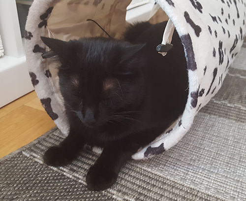

Fem roliga lektips för dig och din katt
En innekatt behöver mycket stimulering eftersom jakt är en stor del av kattens liv. Deras naturliga beteende är att jaga, äta och sova. Därför är det viktigt att du leker med din katt. Här kan du få fem roliga tips på vad du kan hitta på tillsammans med din katt.
Förutom att äta, sova och klösa behöver din katt aktiveras. Det är viktigt för att den ska må bra och inte bli överviktig. Jag försöker att variera leken med mina katter. På vintern när de inte är ute på balkongen behöver de extra mycket lek.
- Lär din katt att apportera leksaker.
- Köp en fjädervippa till din katt. För den fram och tillbaka över exempelvis klösträdet och katten får massvis med motion när den får klättra och springa fram och tillbaka.
- Göm godis. Låt katten få leta efter godiset och använda sitt luktsinne.
- Pingpongbollar som studsar kan vara roligt för katten att jaga.
- Göm dig för katten och låt katten hitta dig eller lek tafatt. Katter är smartare än man tror. De letar upp dig om du gömmer dig och ropar på dem.
Text av Rebeca Sundbaum